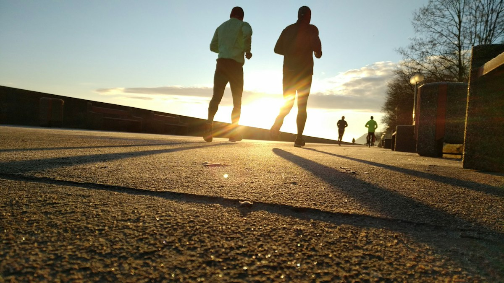

Exemple · Semi 2026
Ouvrir Datasport
Romain Magnin
Dossard 30370 · ½ Marathon
1:56:15,9
Temps via Datasport · photos via Alphafoto — un seul point d’entrée.
Recherche d’exemple — renvoi vers Datasport pour le résultat officiel.
Dossard 30370 · ½ Marathon
1:56:15,9
Résultats 2026 : datasport.com/fr/results/lausanne-marathon-2026
Leaderboard : …/leaderboard
Photos 2026 : alphafoto.com · eventID=2064
Diplôme : à confirmer avec Datasport (non établi depuis la seule page résultats).

Photo : Garett Mizunaka / Unsplash